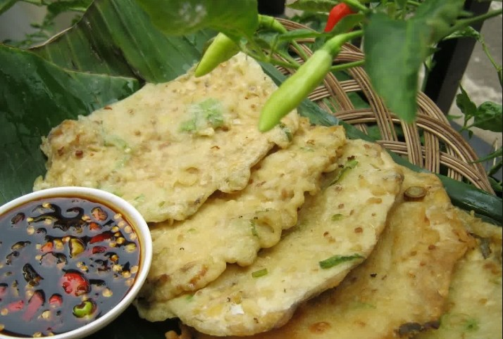
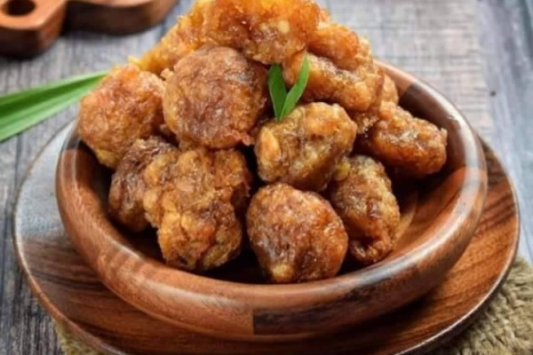
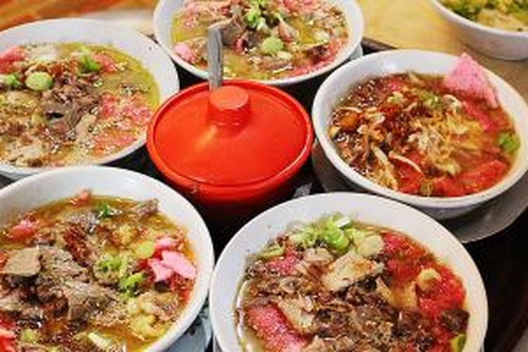
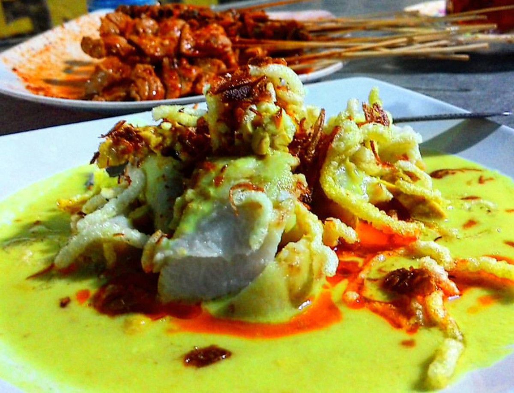
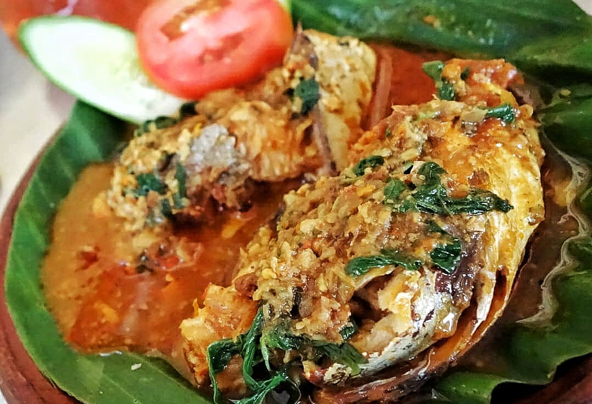

JAJANAN
Makanan jajanan adalah makanan yang dipersiapkan dan dijual oleh
pedagang kaki lima di jalanan dan tempat-tempat keramaian umum lain yang
langsung dimakan atau dikonsumsi tanpa pengolahan atau persiapan lebih
lanjut. Istilah makanan jajanan tidak jauh dari istilah junk food, fast food, dan
street food karena istilah tersebut merupakan bagian dari istilah makanan
jajanan (Adriani dan Wirjatmadi, 2012).
BANYUMAS
A. MENDOAN

Mendoan adalah makanan sejenis gorengan yang berasal dari wilayah Karesidenan Banyumas, Jawa Tengah.
Kata "mendoan" dianggap berasal dari Bahasa Banyumasan, yaitu mendo yang berarti setengah matang atau lembek.
"Mendoan" yang artinya "memasak dengan minyak panas yang banyak dengan cepat" sehingga masakan tidak benar-benar matang.
Bahan makanan yang paling sering dibuat menjadi berbagai Mendoan adalah tempe dan tahu
B. GETUK

Getuk goreng adalah makanan asli khas Sokaraja, Banyumas. Getuk goreng terbuat dari bahan dasar singkong
atau biasanya masyarakat Banyumas menyebutnya dengan sebutan "Boled" dengan tambahan gula jawa membuat getuk
goreng ini menjadi manis dan gurih
C. SOTO SOKARAJA

soto khas Sokaraja, Banyumas, Jawa Tengah. Ciri khas dari sroto ini adalah menggunakan bumbu sambal kacang dan
ketupat yang dicampur di dalam mangkuk.[1] Makanan pendamping yang disajikan saat memesan Sroto Sokaraja adalah
mendoan hangat. Sroto Sokaraja biasanya berisi daging ayam kampung, namun ada pula yang menggunakan daging sapi sebagai isiannya
TEGAL
A. KUPAT GLABED

kupat glabed adalah sajian yang terdiri dari ketupat dan kuah kuning ‘glabed’.
Biasanya kupat glabed dijual menggunakan gerobak atau warung lesehan kaki lima. Meski begitu,
kupat glabed khas Tegal ini selalu ramai pembeli karena rasanya gurihnya yang membuat ketagihan.
Apalagi kuahnya yang hangat kaya rempah sangat cocok disajikan sebagai menu makan malam penghangat perut.
B. TAHU ACI

Camilan sederhana ini memiliki rasa yang enak. Makanan khas Tegal tahu aci dibuat dengan irisan tahu
berbentuk segitiga dan ditambahkan dengan adonan aci di atasnya. Digoreng hingga matang, tahu aci enak
dinikmati bersama sambal kecap.
C. SEGA PONGGOL

Makanan khas Tegal Jawa Tengah yang sering disajikan saat sarapan. Segaponggol merupakan
menu sarapan khas Tegal yang dibuat dengan campuran nasi putih yang dibungkus dengan daun pisang.
CILACAP
A. BREKECEK

Brekecek adalah masakan tradisional berbahan dasar kepala ikan yang khas dari Cilacap, Jawa tengah.
Brekecek ini memiliki cita rasa yang khas, rasa gurih, manis dan pedas pada kuah yang meresap kedalam daging
memberikan kelezatan tersendiri pada masakan ini. Selain itu aroma rempah yang sangat terasa pada kuahnya, menambah kenikmata pada Brekecek ini.
B. BAKSO BOGEM

Bakso bogem merupakan olahan daging sapi berukuran raksasa dan di dalamnya terdapat daging
sapi bagian urat yang dicincang. Ukuran yang besar ditambah taoge, mi kuning, mie putih,
daun bawang, seledri potong, caesim, tetelan, dan tahu pong. Ditambah limpahan kuah kaldu
sapi panas yang membuat air liur tak kuasa dibendung.
C. REMPEYEK YUTUK

Rempeyek Yutuk merupakan makanan khas dari Kota Cilacap, Jawa Tengah. Yutuk adalah memiliki habitat
di pesisir pantai selatan Indonesia,Yutuk atau biasa disebut dengan Undur-undur Laut masuk ke dalam genus
Emerita sp, family Hippidea dengan nama ilmiah emerita analoga.